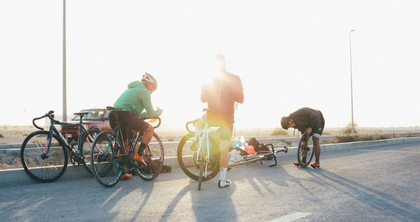

Tener tu bicicleta en buen estado, limpia y lubricada contribuye a tu buen rendimiento y seguridad sobre ella.
Es importante que tengas en cuenta que a mayor uso, mayor desgaste, por eso es necesario que le hagas un mantenimiento completo (taller) y preventivo (nosotros). Busca un taller cercano a tu hogar, lugar de trabajo
o que esté sobre una ruta que transites frecuentemente. Pregunta a ciclistas con mayor tiempo rodando acerca de este tipo de servicios y costos para encontrar diversos indicadores y no salgas desembolsando una
cantidad exorbitante.
Te recomendamos un mantenimiento completo previo a algún evento deportivo.
Lavado de bici después de una salida “sucia” o cada 15 días
Calibrar la presión (120 -140 psi - 6 a 8 Bar) - Si vas a entrenar en altura, vete con 120 - 125
Revisar el ajuste de las ruedas (Que la llave del eje quede bien asegurada)
Alistamiento (Limpieza y engrase) Cada 50 a 60 hrs
Mantenimiento completo cada 90 a 100 hrs max
Cambia las pastas de los frenos cada 90 a 100 hrss
Bomba de aire
Kit de parches con pegamento y lija
Cámaras / Neumático de repuesto
Palancas para desmontar y montar la cubierta
Juego de llaves hexagonales o Allen
Juego de llaves TORX
Destornillador de estrella y de punta plana
Juego de llaves fijas
Pinza o alicate de punta
Navaja multiherramientas
Cinta americana
Aceite
Abrazaderas
Herramientas avanzadas
Eslabones desmontables
Tronchacadenas / Despinador
Llave de radios
1. Ubícate en un lugar seguro.
2. Para desmontar la llanta pinchada, abre la válvula y deja que salga el poco aire que aún queda al interior de la cámara o neumático.
Puedes hacerlo de manera mucho más sencilla poniendo la bici ruedas arriba, de tal forma que quede apoyada en el suelo sobre el asiento y
la dirección.
Si la llanta afectada fue la trasera, una buena estrategia para desmontarla es configurar la cadena en el piñón y en el plato más pequeño.
Esta combinación nos permite reducir la tensión y quitar la llanta con mayor facilidad.
3. Retira la llanta del rin. Si cuentas con las palancas para desmontar cubiertas, introduce la primera, como si la clavaras entre el rin y la llanta.
Después gírala haciendo palanca hacia afuera para sacar la coraza. Introduce la segunda palanca, con el cuerpo hacia abajo, y le vas dando vuelta
recorriendo todo el borde del rin. Así sacarás la totalidad de la llanta.
Si no cuentas con las palancas, es necesario entonces que trates de separar la cubierta de la llanta con tus propias manos, ejerciendo
presión hacia afuera hasta que logres separar la cubierta por completo.
4. Saca el neumático asegurándote de empezar por la parte de la válvula para evitar romper el neumático.
5. Revisa dentro de la llanta con tus dedos que no haya ningún objeto que pueda volver a pinchar.
6. Infla el neumático y dale vueltas cerca a tu cara, si es necesario, hasta que identifiques la zona de la exactamente sale el aire, marca el
sitio y vuelve a desinflar el neumático.
7. Después, en una superficie plana, limpia y lija la zona exacta del pinchazo.
8. Aplica pegamento en un área mayor al parche, espera entre 5 y 10 minutos a que se seque y pega el parche, realiza una leve presión durante
un par de minutos. Hay parches que no requieren pegamento.
9. Infla el neumático y asegúrate que ya no tiene fuga de aire. Revisalo muy bien.
10. Saca el aire del neumático y estiralo un poco en la zona donde colocaste el parche. Si este no se mueve, el neumático está listo para
volverse a instalar.
11. Ahora, introduce el neumático desinflado en la llanta/cubierta, ubicando primero la válvula en su sitio y con la ayuda de tus dos manos o
palancas si cuentas con ellas, mete el borde de la llanta, dentro del rin.
12. Por último, vuelve a montar la llanta a la bicicleta, infla el neumático de nuevo con una presión adecuada, colocale el tapón a la válvula y listo.
En caso de que la cubierta/llanta se haya rajado un poco, puedes pegar un parche por dentro para evitar que el neumático se salga por el hueco. Sin embargo, ten presente que debes cambiarla una vez llegues a casa.
Para prevenir futuros pinchazos, puedes optar por cubiertas antipinchazos o cámaras autosellantes.
No abusar de los cambios cruzados.
Evitar pedalear con selecciones extremas (plato grande/piñón grande o plato pequeño/piñón pequeño) ya que la cadena, en estas relaciones,
trabaja con los eslabones ladeados y acelera su desgaste.
Lubricar la cadena frecuentemente.
Comprobar que la cadena tiene la tensión adecuada.
Cambiar la cadena Cada 400 horas de rodaje aprox.
1. Ubícate en un lugar seguro.
2. Si la cadena ya está rota, pero aún no la sacas de la bicicleta, primero hay que desmontarla. Para ello, primero cambia las marchas a una posición intermedia. Esto reduce la tensión
de la cadena y facilita su retirada.
3. Para retirar la parte rota de la cadena, primero busca el eslabón roto y lo colocas en el troncha cadenas. Empuja hacia fuera el pasador del eslabón de la cadena con el pasador
del tronchacadenas.
4. En lugar del eslabón roto, ahora es el momento de insertar el nuevo cierre de la cadena. Para ello recomendamos el uso de un eslabón rápido.
5. Para volver a montar la cadena primero hay que montarla sobre los piñones, los desviadores y el plato.
6. Posteriormente sacar la cadena del plato para que no ejerza tensión y podamos unir más fácilmente la cadena.
7. Unir la cadena con un eslabón rápido.
8. Para fijar el pin del eslabón rápido sujeta la rueda trasera y acciona el pedal con cierta fuerza hasta que oigas un click.
9. Poner de nuevo la cadena sobre el plato y listo.
La cadena, piñones y platos perciben polvo, suciedad y óxido que reducen su correcta función y hacen fricción en las distintas piezas,
que generan desgaste si no están bien lubricadas, por eso es fundamental limpiar y engrasar de manera regular la transmisión de tu bicicleta.
No debemos engrasar inmediatamente, es uno de los errores que se cometen. Es fundamental lavar primero, para quitar polvo y suciedad, ya que de lo contrario la grasa quedará adherida a la cadena y piñones.
Limpiar de arriba hacia abajo
Poner énfasis en limpieza de pastillas y frenos
Limpieza de cuadro y componentes: Frenos, puentes de frenos, pastillas, manetas de cambio, cinta del manillar, bielas y pedales
Limpiar cadena, piñones y platos previamente con thinner
Desviador y cambio trasero limpieza profunda
Lubricar la transmisión. Utilizar grasa para cadena o aceite lubricante
Por lo general, se dañan debido a la falta de mantenimiento y lubricación. Para ambos casos se recomienda cambiarlos cada
6 meses, aunque no presenten desgaste. La única opción, en caso de que se rompan, es reemplazarlos con un cable de nuevo.
Un truco para un freno roto, y poder solventar al momento, es enrollar el cable en la mano para utilizarlo manualmente al
frenar. En cuanto al cambio, hay que apretar los tornillos que regulan el desviador y subir hasta un piñón que puedas usar mejor.
En definitiva, lo importante es siempre mantener la bicicleta en las mejores condiciones posibles, contar con las herramientas precisas, repuestos adecuados y nunca perder el sentido de la aventura.